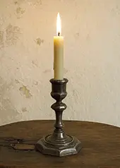
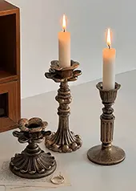
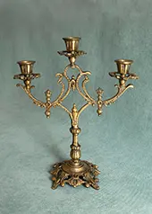
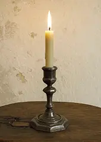
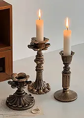
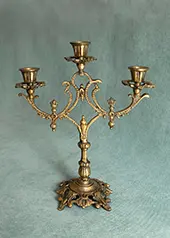

bei Fragen meldet euch gerne bei uns.
Diese alten Kerzenständer erzählen von vergangenen Zeiten und verleihen jedem Raum eine besondere Atmosphäre. Gefertigt aus hochwertigen Materialien und geprägt von feinen Gebrauchsspuren, ist jedes Stück ein Unikat mit Charakter. Die Patina zeugt von ihrem Alter und macht ihren besonderen Charme aus.
Ob als stimmungsvolles Einzelstück, stillvolles Paar oder dekorativer Akzent in euerem Zuhause. Diese Kerzenständer setzen warmes Licht gekonnt in Szene und verbinden Geschichte mit zeitloser Ästhetik.
Jeder Kerzenständer wird sorgfältig geprüft und liebevoll verpackt. Kleine Unregelmäßigkeiten unterstreichen die Authentizität und machen jedes Stück einzigartig.
Bei uns ist jedes Teil ein Unikat und somit ein Einzelstück, donnoch haben wir mehrere ähnliche Stüke zur Auswahl. Im Moment haben wir diese vier Kerzenständer da, da sich das allerdings ständig ändern kann, schaut ihr am besten immer wieder vorbei:)